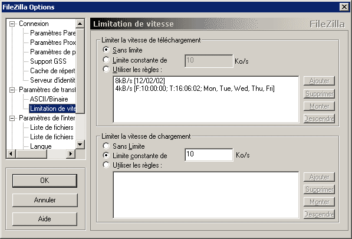
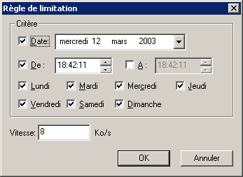

Configuration de la Vitesse Limite
Vue d'ensemble:
Il est parfois inadéquat de transférer les fichiers à la vitesse maximale possible. Dans ce cas, vous pouvez régler les limites de la vitesse dans cette section.

Les limites de vitesse sont divisées en 2 catégories: Vitesse limite de Téléchargement et Vitesse limite de Chargement. De cette façon, vous pouvez configurer les vitesses limites séparément pour les envois et réceptions.
Vous pouvez aussi bien régler une Vitesse Limite Constante, qu'établir des Règles de Limites de Vitesse.

Pour chaque règle vous pouvez spécifier le jour de la semaine et/ou l'heure à laquelle la règle deviendra active. Lors de l'exécution des règles au cours d'un transfert, la vitesse limite sera établie en fonction de la première règle active de la liste.